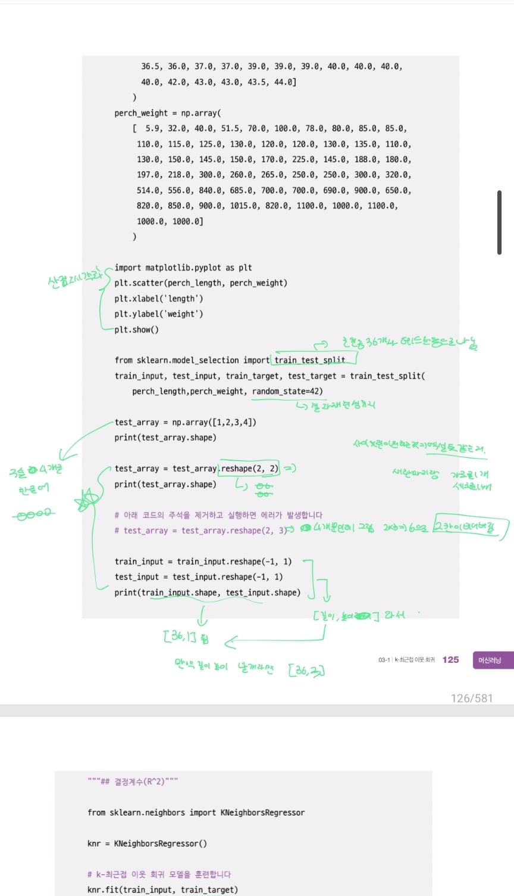

ML Study · 3주차
회귀 알고리즘과
모델 규제
2-2에서 만든 핀치부리새 분류 모델을 복습하고, 같은 데이터를 부리 길이로 부리 높이를 예측하는 회귀로 바꿔 3-1·3-2를 실습했습니다. 3-3은 개념만 정리했습니다.
01 이번 주에 한 일
2-2에서 만든 데이터를 그대로 가져와 회귀 문제로 바꿨습니다. 분류에서는 "어느 무리인가"를 맞혔지만, 회귀에서는 "높이가 몇인가"를 맞힙니다.
| 단계 | 한 일 | 테스트 점수 |
|---|---|---|
| 2-2 | 길이·높이 두 특성으로 분류, 표준화 적용 | 정확도 1.000 |
| 3-1 | 부리 길이로 높이 예측, k 조절 | R² 0.9817 |
| 3-2 | 선형 회귀와 2차 다항 회귀로 같은 문제 | R² 0.7235 / 0.7745 |
| 3-3 | 특성 공학과 규제 개념 정리 (실습 없음) | — |
3-1과 3-2는 노트북과 같은 random_state=42 분할로 다시 계산해 확인했습니다.
02 2-2 복습 · 두 특성으로 분류하기
3장으로 넘어가기 전에 2-2 모델을 다시 짚었습니다. 부리 길이와 높이 두 특성으로 "작은 부리(1) / 큰 부리(0)"를 맞히는 분류입니다.
리스트 두 개를 column_stack으로 묶어 (49, 2) 배열을 만들고, 타깃은 ones(35)와 zeros(14)를 이어 붙였습니다. stratify를 주면 테스트 세트에도 두 클래스가 비슷한 비율로 들어갑니다.
bird_data = np.column_stack((beak_length, beak_height))
bird_target = np.concatenate((np.ones(35), np.zeros(14)))
X_train, X_test, y_train, y_test = train_test_split(
bird_data, bird_target, stratify=bird_target, random_state=42
)
kn = KNeighborsClassifier()
kn.fit(X_train, y_train)
kn.score(X_test, y_test) # 1.0
kn.predict([[11.5, 4.0]]) # [0.] → 큰 부리11.5, 4.0은 두 무리 사이의 빈 공간에 있습니다. 그래도 가장 가까운 5마리가 모두 큰 부리라서 0으로 예측합니다. 가장 가까운 이웃은 (12.5, 3.2)로 거리가 1.28입니다.
스케일이 다르면 거리가 왜곡된다
길이는 8~15, 높이는 2.7~6.9 범위입니다. 단위가 다르면 거리 계산에서 길이가 더 큰 영향을 주기 때문에, 훈련 세트의 평균과 표준편차로 표준화했습니다.
mean = np.mean(train_input, axis=0) # [10.71, 5.36]
std = np.std(train_input, axis=0) # [ 2.20, 1.51]
train_scaled = (train_input - mean) / std
test_scaled = (test_input - mean) / std # 같은 mean/std 사용
kn.fit(train_scaled, train_target)
kn.score(test_scaled, test_target) # 1.003 데이터: 핀치부리새 49마리
작은 부리 35마리와 큰 부리 14마리로 이루어져 있습니다. 길이가 길수록 높이가 낮아지는 역방향 관계라, 교재의 농어 데이터와는 결이 다릅니다.
49마리를 36마리 훈련 / 13마리 테스트로 나눴습니다. 테스트 세트는 학습 중에 한 번도 보지 않습니다.
from sklearn.model_selection import train_test_split
X_train, X_test, y_train, y_test = train_test_split(
beak_length, beak_height, random_state=42
)
# 36마리 / 13마리04 3-1 · k-최근접 이웃 회귀
분류와 똑같이 가까운 이웃을 찾고, 타깃만 다수결이 아니라 평균으로 정합니다. 정확도 대신 결정계수 R²와 MAE로 평가합니다.
| k | 훈련 R² | 테스트 R² | 느낌 |
|---|---|---|---|
| 1 | 0.9898 | 0.9677 | 너무 복잡, 테스트 점수 최저 |
| 3 | 0.9874 | 0.9800 | 테스트 최고 |
| 5 | 0.9879 | 0.9817 | 기본값, 가장 안정적 |
| 10 | 0.9843 | 0.9791 | 조금 단순해짐 |
과대적합은 훈련 점수만 높고 테스트가 떨어지는 상태, 과소적합은 둘 다 낮은 상태입니다. KNN에서는 k를 줄이면 복잡해지고, 늘리면 단순해집니다.
거리가 똑같은 이웃이 생기면 sklearn이 어느 쪽을 고르느냐에 따라 소수점 넷째 자리가 0.0001 정도 달라집니다(예: k = 3 → 0.9874 ↔ 0.9875). 표에는 노트북 값을 적었습니다.
05 3-2 · 선형 회귀와 다항 회귀
KNN은 훈련 데이터의 최대 길이(15.5) 밖을 모릅니다. 30.0을 넣으면 어디까지나 2.8에 머뭅니다. 직선과 곡선은 범위 밖도 계속 예측합니다.
| 모델 | 식 | 길이 30.0 |
|---|---|---|
| KNN (k=3) | 이웃 3개의 평균 | 2.80 |
| 선형 회귀 | −0.6069 × 길이 + 11.746 | −6.46 |
| 다항 회귀 | −0.0743 × 길이² + 1.1265 × 길이 + 2.092 | −30.94 |
# 2차 다항: 길이를 제곱한 열을 추가한다
train_poly = np.column_stack((train ** 2, train))
lr = LinearRegression().fit(train_poly, train_target)
lr.score(test_poly, test_target) # 0.774506 3-3 · 특성 공학과 규제
3-3은 코드 실습 없이 개념만 정리했습니다. 아래 수치는 교재의 농어 데이터 기준입니다.
특성을 늘리면 표현력이 커진다
- 다중 회귀 — 특성이 여러 개인 선형 회귀. 특성 1개는 직선, 2개는 평면, 그 이상은 초평면입니다.
- 특성 공학 — 기존 특성을 제곱하거나 곱해 새 특성을 만드는 일. 모델은 그대로 선형 회귀입니다.
- PolynomialFeatures — 조합을 자동으로 만들어 줍니다. 특성 3개 기준 2차는 9개, 5차는 55개.
- StandardScaler — 규제를 공정하게 걸려면 스케일을 맞춰야 합니다. 훈련 세트의 평균·표준편차로 테스트 세트까지 변환합니다.
특성을 늘리면 과대적합이 온다
| 모델 | 훈련 R² | 테스트 R² |
|---|---|---|
| 다중 회귀 (2차) | 0.9903 | 0.9715 |
| 다중 회귀 (5차) | 1.0000 | −144.41 |
| 릿지 α = 0.1 | 0.9904 | 0.9828 |
| 릿지 α = 1 | 0.9896 | 0.9791 |
| 라쏘 α = 10 | 0.9888 | 0.9824 |
5차 모델은 훈련 세트를 완벽히 외워 R²가 1이지만, 테스트 점수는 음수까지 떨어집니다. 55개 특성에 42개 샘플뿐이라 생기는 일입니다.
규제는 계수 크기를 줄여 이 과대적합을 누릅니다. 릿지는 계수를 작게 만들고, 라쏘는 아예 0으로 만들어 버립니다(α = 10에서 55개 중 40개가 0).
07 3장 개념 정리
실습하면서 계속 헷갈렸던 말들을 한 표로 모았습니다.
| 용어 | 뜻 |
|---|---|
| 회귀 | 숫자를 예측합니다. 분류는 클래스를 맞힙니다. |
| 결정계수 R² | 1에 가까울수록 좋고, 0은 평균으로 찍는 수준입니다. 음수도 나올 수 있습니다. |
| MAE | 예측과 타깃 차이의 절댓값 평균. 숫자가 그대로 오차 크기입니다. |
| 과대적합 | 훈련 점수는 높은데 테스트 점수가 크게 떨어지는 상태. |
| 과소적합 | 모델이 너무 단순해 훈련 세트조차 못 맞히는 상태. |
| 외삽 | 훈련 범위 밖을 예측하는 일. KNN은 범위 밖을 알지 못합니다. |
| 다중 회귀 | 특성이 여러 개인 선형 회귀. 특성 2개면 평면을 학습합니다. |
| 특성 공학 | 기존 특성을 제곱하거나 곱해 새 특성을 만드는 일. |
| 규제 | 계수 크기를 줄여 과대적합을 누릅니다. 릿지는 L2, 라쏘는 L1. |
| alpha | 규제의 강도. 크면 모델이 단순해지고, 너무 크면 과소적합이 됩니다. |
alpha도 k처럼 조절하는 손잡이
alpha를 키우면 계수가 0 쪽으로 줄어듭니다. 훈련 점수는 계속 내려가지만 테스트 점수는 어딘가에서 가장 높아졌다가 다시 내려갑니다. 그래서 alpha를 바꿔 가며 가장 좋은 지점을 찾습니다.
릿지는 계수를 작게 만들 뿐 0으로는 만들지 않고, 라쏘는 계수를 아예 0으로 만들어 쓸모없는 특성을 쳐냅니다. 교재의 라쏘(α = 10)에서는 55개 계수 중 40개가 0이 되었습니다.
08 회고
같은 데이터라도 질문을 바꾸면 모델도 지표도 달라진다는 게 이번 주의 가장 큰 수확이었습니다. 분류에서 1.0이던 정확도가 회귀에서는 R² 0.98이 되고, k 하나로 모델의 성격이 바뀌는 걸 직접 봤습니다. 특히 KNN이 30.0을 2.8이라고 답한 순간, "모델이 모르는 것"을 모델이 말해 주는 방법이 필요하다는 걸 느꼈습니다.
